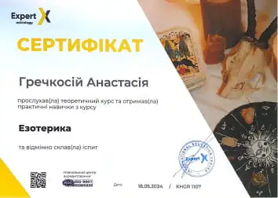
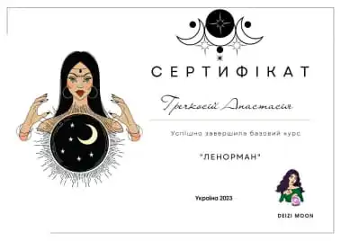

Таролог у Києві – консультації з Таро
твій особистий Таролог
Іноді потрібен хтось, хто допоможе знайти відповіді в складних ситуаціях і підтримає у прийнятті важливих рішень.
Зворотній зв'язокПро мене
-
Вітаю! Мене звати Анастасія, я езотерик, нумеролог і майстриня програмних свічок із досвідом роботи з 2022 року. Моя спеціалізація включає метод "Матриця долі", нумерологічні аналізи особистості та роботу з картами Таро. Завдяки різноманітним послугам, методикам і практикам я допомагаю своїм клієнтам покращити якість життя, знайти відповіді на хвилюючі питання й очиститися від негативу.
-
Моє життя завжди було наповнене глибоким інтересом до езотерики та бажанням допомагати людям знаходити гармонію й відповіді на складні життєві питання.
-
Моя подорож у світ Таро розпочалася ще з дитинства, коли я зацікавилася старовинними картами. З роками це хобі переросло у серйозне вивчення символіки й енергетики Таро. Я пройшла багато курсів і майстер-класів, які дозволили мені здобути глибокі знання та навички, що стали основою моєї роботи з клієнтами.
-
Як матриціолог, я вивчаю вплив чисел і енергій на наше життя. Метод "Матриця долі" допомагає виявити приховані патерни та закономірності, які залишаються непомітними для багатьох. У поєднанні з нумерологією, яка розкриває символічне значення чисел, я надаю інформативні консультації, що допомагають приймати важливі рішення й знаходити власний шлях.
-
Я переконана, що кожна людина має унікальне життєве призначення, і моя місія – допомогти вам зрозуміти ваші шляхи та знайти гармонію. Для цього я постійно вдосконалюю свої знання: відвідую семінари, читаю спеціалізовану літературу та спілкуюся з колегами з різних країн.
-
Окремо хочу відзначити мою роботу з програмними свічками. Це особливий інструмент, який, завдяки використанню натуральних компонентів, втілює ваші наміри, очищує, захищає та допомагає реалізувати ваші бажання.
-
Ви можете звернутися до мене з будь-якими питаннями чи проблемами: якщо хочете покращити сімейні стосунки, фінансовий стан, знайти другу половинку, залучити клієнтів і удачу, зрозуміти свій потенціал або підняти якість життя на новий рівень.
-
Я буду рада допомогти вам знайти відповіді на ваші питання й підтримати на шляху до самопізнання та гармонії.
мої досягнення
Звертайтеся у будь-який зручний для вас час. Проводжу особисті та онлайн-консультації, доступні для клієнтів з усього світу.
- 
- 
-

-

-

Відгуки клієнтів
Ваш відгук — найкраща подяка за мою роботу! Щиро дякую вам, мої дорогі!
-
Іван
Київ
Хочу висловити подяку Анастасії за її професійну консультацію. Я звернувся з питанням стосунків, і вона дала мені корисні поради, допомогла подивитися на ситуацію з нової перспективи. Її глибоке розуміння та чуйність справили на мене велике враження. Дуже вдячний за підтримку і з радістю рекомендую Анастасію тим, хто шукає поради та гармонії у своєму житті.
-
Марія
Буча
Щиро дякую Анастасії за чудову консультацію з питань роботи. Вона допомогла мені побачити нові перспективи та розібратися у складній ситуації. Її поради виявилися надзвичайно корисними та надихаючими. Анастасія — справжній професіонал своєї справи. Рекомендую її всім, хто шукає підтримку та мудрі поради.
-
Жанна
Львів
Висловлюю вдячність за підтримку в складний період життя. Консультація допомогла краще зрозуміти ситуацію та знайти душевний спокій. Поради виявилися надзвичайно корисними і сприяли прийняттю важливих рішень. Рекомендую тим, хто шукає мудрість і підтримку.
Контакти
Залиште свій запит зручним для вас способом, і я обов'язково з вами зв'яжуся. Проводжу консультації онлайн для клієнтів по всьому світу. Разом ми проведемо діагностику та розробимо план дій. Звертайтеся зараз!